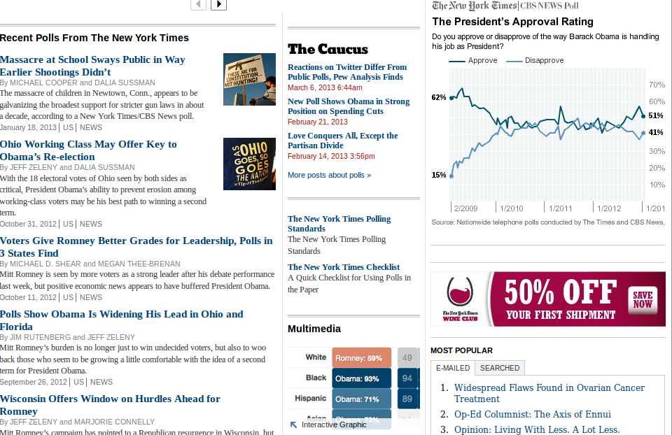

According to Kevin Schaul
This presentation has no coherent order.
Automate everything, a la NPR's app template.
How many actions does it take to push an update?
Wouldn't it be nice if we deploy like this?
$ fab deploy
Git. It'll change your life.
kevin:~$ git commit index.html
kevin:~$ git push
chandra:~$ git commit css/style.css
chandra:~$ git pull
chandra:~$ git push
kevin:~$ git branch dev
kevin:~$ git commit js/logic.js
kevin:~$ git push origin dev
dave:~$ git pull origin dev
dave:~$ git branch stable
dave:~$ git merge dev
dave:~$ git push origin stable
kevin:~$ git commit index.html
kevin:~$ git push origin dev
jamie:~$ git pull origin dev
jamie:~$ git log
commit f5b5c189e07ec79e8b257972bf74a20457743609
Author: Kevin Schaul
Date: Fri Mar 8 14:09:20 2013 -0600
Remove `$` from html
Clickability templates conflict
commit ad0495c78d8a059d447069a72074f8df53cd4e48
Author: Kevin Schaul
Date: Fri Mar 8 10:47:01 2013 -0600
Updated photo urls in spreadsheet
jamie:~$ git revert HEAD~1
jamie:~$ git push
If the command line scares you, I can look for a "pretty" git client.
GitX (L) looks promising.
For news apps and code
Check out what ProPublica has done.
Don't repeat yourself!
The ultimate in coding goodness
Again, automation
Design for sidebars, apps, etc.
A mini CMS for data projects
Is rate-limited by Google (but we're smart)
var ds = new Miso.Dataset({
url : "/data/uranium.csv",
delimiter : ",",
columns : [
{ name : "year", type : "time", format : "YYYY" }
]
});
ds.fetch({
success: function() {
//Select rows in the 80's & find their average
var uraniumInThe80s = this.where({
rows : function(row) {
return (row.year >= moment([1980]) &&
row.year < moment([1990]));
}
}).mean("value");
});
Yikes.
There has been little resistance from our readers to doing awesomeness.— @nytgraphics's Amanda Cox, on IE support
Thanks!